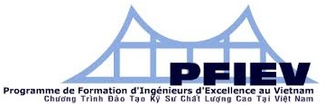
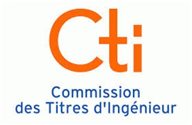
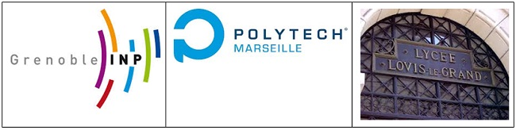

Chương trình Đào tạo Kỹ sư Chất lượng cao trên toàn quốc
Chương trình Đào tạo Kỹ sư Chất lượng cao tại Việt nam (PFIEV) được thành lập từ năm 1999, là chương trình hợp tác giữa Chính phủ Việt Nam và Chính phủ Cộng hoà Pháp. Chương trình PFIEV được triển khai tại bốn trường: ĐH Bách khoa Hà Nội, ĐH Xây dựng Hà Nội, ĐH Bách khoa thuộc ĐH Đà Nẵng, ĐH Bách khoa thuộc ĐHQG TP. Hồ Chí Minh.
Chương trình PFIEV theo mô hình đào tạo Kỹ sư của các trường Đại học hàng đầu tại Pháp. Khối lượng kiến thức trong 5 năm học khoảng 300 tín chỉ. Chương trình giảng dạy bằng tiếng Việt và chia thành hai giai đoạn:
- Giai đoạn I (2 năm): trang bị những kiến thức khoa học cơ bản, cơ sở kỹ thuật, khoa học xã hội theo chương trình của Trường Louis Le Grand Paris. Sinh viên được học tăng cường về ngoại ngữ (20 tín chỉ tiếng Pháp và 20 tín chỉ tiếng Anh).
- Giai đoạn II (3 năm): trang bị kiến thức chuyên môn kỹ thuật ngành rộng theo khung chương trình do Trường đối tác phía Việt Nam và phía Pháp hợp tác biên soạn, trang bị kỹ năng thực hành trên các thiết bị hiện đại và đồng bộ, trang bị các kiến thức về quản lý kinh tế.
Kết thúc giai đoạn I (sau khi học xong 3 học kỳ đầu), sinh viên trải qua kỳ thi phân ngành tổ chức chung cho bốn trường Đại học Việt Nam tham gia chương trình. Sinh viên có thể lựa chọn nguyện vọng ngành học trong số 17 chuyên ngành của Chương trình PFIEV thuộc bốn trường Đại học Việt Nam. Việc xếp ngành học căn cứ vào nguyện vọng của sinh viên, kết quả kỳ kiểm tra phân ngành, số lượng sinh viên cần tuyển của từng chuyên ngành.
Chương trình đào tạo Kỹ sư Chất lương cao Việt-Pháp PFIEV đã được Ủy ban cấp bằng Kỹ sư Cộng hòa Pháp (CTI) đánh giá kiểm định chất lượng. Bằng Kỹ sư Chất lượng cao PFIEV được Cộng hòa Pháp và Châu Âu công nhận, tương đương trình độ Thạc sỹ. Hoa Kỳ cũng đã công nhận bằng kỹ sư Pháp tương đương trình độ Thạc sỹ.

Chương trình PFIEV Đà Nẵng
Trường Đại học Bách khoa – Đại học Đà Nẵng hợp tác với Lycée Louis Legrand de Paris (LLP), Institut National Polytechnique de Grenoble (Grenoble INP), Ecole Polytech Marseille thuộc Université d’Aix Marseille đào tạo các chuyên ngành
- Sản xuất tự động (tuyển sinh từ năm học 1999-2000)
- Tin học công nghiệp (tuyển sinh từ năm học 2007-2008)
- Công nghệ phần mềm thuộc ngành Công nghệ Thông tin (tuyển sinh từ năm học 2011-2012)

Trưởng PFIEV Đà Nẵng: PGS. TS. Lê Kim Hùng, Hiệu trưởng Trường ĐH Bách Khoa
Trợ lý PFIEV Đà Nẵng: PGS. TS. Lê Cung, Hiệu phó Trường ĐH Bách Khoa
Chương trình PFIEV ngành Công nghệ Thông tin
Chuyên ngành Công nghệ phần mềm thuộc ngành Công nghệ Thông tin, trang bị cho người kỹ sư các kiến thức chuyên sâu về Công nghệ phần mềm, Mạng và truyền thông, Điện tử và Quản lý dự án. Kỹ sư Công nghệ Thông tin có khả năng làm việc trong các lĩnh lực thiết kế và xây dựng các hệ thống phần mềm quản lý và phần mềm công nghiệp; thiết kế và quản trị các hệ thống mạng máy tính và truyền thông; thiết kế và phát triển các hệ thống phần mềm nhúng.
Khung chương trình đào tạo PFIEV ngành Công nghệ Thông tin được xây dựng dựa trên chương trình đào tạo của các đối tác Lycée Louis Legrand de Paris (LLP), Institut National Polytechnique de Grenoble (Grenoble INP), Ecole Polytech Marseille thuộc Université d’Aix Marseille.
Xem Khung chương trình đào tạo PFIEV ngành Công nghệ Thông tin
Chương trình PFIEV ngành Công nghệ Thông tin tuyển 30 sinh viên / năm.
Chuẩn đầu ra
Sau khi tốt nghiệp kỹ sư chuyên ngành Công nghệ Phần mềm, ngành Công nghệ Thông tin:
- Có kiến thức nền tảng tốt cũng như khả năng khai thác hiệu quả các thiết bị hiện đại: máy tính, điện thoại di động, hệ thống nhúng, mạng máy tính.
- Có kiến thức chuyên ngành đầy đủ để thích ứng cao và làm việc với các hệ điều hành và ngôn ngữ lập trình khác nhau, các công nghệ khác nhau, các bộ vi xử lý và phần cứng khác nhau.
- Có khả năng phân tích, thiết kế và triển khai các hệ thống phần mềm.
- Có tư duy phê phán để nhận biết, phân tích và cải tiến liên tục.
- Có tư duy sáng tạo để luôn tìm tòi, sáng tạo ra những sản phẩm mới cả về phần cứng cũng như phần mềm.
- Có khả năng tổ chức và điều hành có hiệu quả trong làm việc nhóm.
- Có khả năng trình bày kết quả và trao đổi kinh nghiệm với đồng nghiệp và khách hàng, có kỹ năng mềm trong hoạt động khoa học, công nghệ.
- Có khả năng học tập liên tục để tự trang bị, bổ sung thêm những tri thức mới trong bối cảnh thay đổi rất nhanh của lĩnh vực công nghệ thông tin.
- Có khả năng hiểu biết về xã hội và môi trường.
- Có trình độ ngoại ngữ tiếng Pháp B1 và tiếng Anh TOEFL 500 điểm.
Đối tượng và hình thức xét tuyển
- Thí sinh được tuyển thẳng hay thí sinh thi khối A, khối A1 trúng tuyển vào trường Đại học Bách khoa – Đại học Đà Nẵng
- Việc tuyển chọn dựa trên cơ sở điểm thi đại học, quy đổi theo công thức: Điểm Toán × 3 + Điểm Lý × 2 + Điểm Hóa hay Tiếng Anh (không tính điểm ưu tiên)
- Ưu tiên tuyển thí sinh đạt giải trong các kỳ thi học sinh giỏi Toán, Lý, Hóa, Tin học quốc gia và quốc tế
Cơ hội và điều kiện học tập
- Giảng dạy bởi đội ngũ giáo viên giỏi, nhiều kinh nghiệm
- Thực hành, thí nghiệm trên các thiết bị hiện đại và đồng bộ do Pháp và Việt Nam tài trợ
- Được mượn toàn bộ sách giáo khoa giai đoạn I
- Đào tạo chất lượng, tối đa 30 sinh viên/lớp ở giai đoạn II
- Học tăng cường 2 ngoại ngữ Anh và Pháp
- Tham dự các buổi xê-mi-na và giảng dạy của các giáo sư Pháp
- Cơ hội theo học 1 trong 17 chuyên ngành của PFIEV toàn quốc ở giai đoạn II
- Chỉ đóng học phí bằng mức thông thường của hệ niên chế (do được Bộ Giáo dục và Đào tạo hỗ trợ kinh phí)
- Bằng Kỹ sư Chất lượng cao được Cộng hòa Pháp và Châu Âu công nhận, tương đương trình độ Thạc sỹ
- Được phép học tiếp nghiên cứu sinh Tiến sỹ tại Pháp và Hoa Kỳ, không cần qua trình độ Thạc sỹ
- Cơ hội thực tập tốt nghiệp tại các doanh nghiệp Pháp và trường đối tác Pháp
- Cơ hội nhận học bổng du học Pháp của Chính phủ Pháp và Việt Nam
- Ngoài ra, sinh viên có đầy đủ quyền lợi và nghĩa vụ như các sinh viên khác của Trường Đại học Bách khoa
Trưởng chuyên ngành: PGS. TS. Nguyễn Thanh Bình, Trưởng Khoa Công nghệ Thông tin